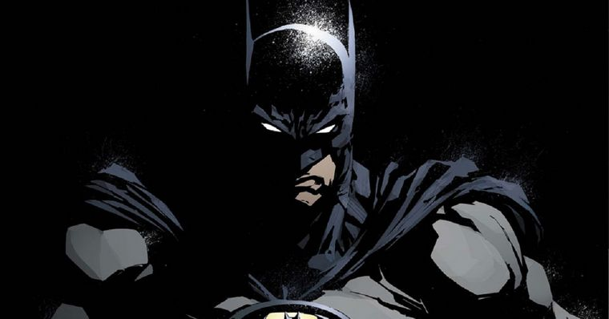

Bruce Wayne
Bruce Wayne criou o Batman para causar medo no submundo de Gotham e para defender os inocentes. O uniforme e a maneira como age quando o usa tem o objetivo de intimidar seus adversários. Enquanto Bruce Wayne é despreocupado e irresponsável, Batman é frio, determinado e implacável. Além do uniforme e da personalidade, Bruce Wayne também altera sua voz significativamente quando torna-se Batman, tanto para disfarçar como para intimidar. Batman costuma atuar apenas à noite (e não durante o dia, como no seriado dos anos 1960), imitando os hábitos dos morcegos. Em histórias mais recentes, surgiu a ideia de Batman como uma lenda urbana.